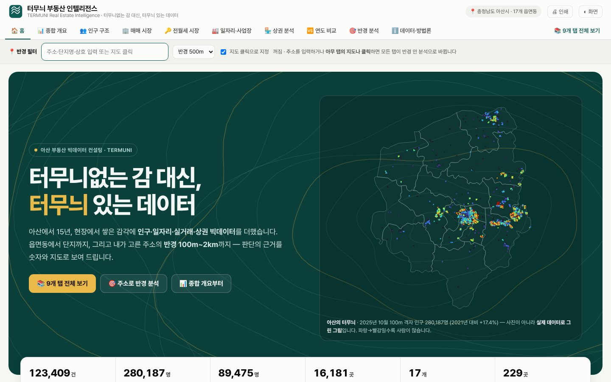
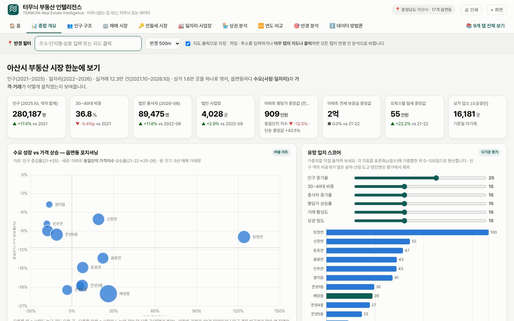
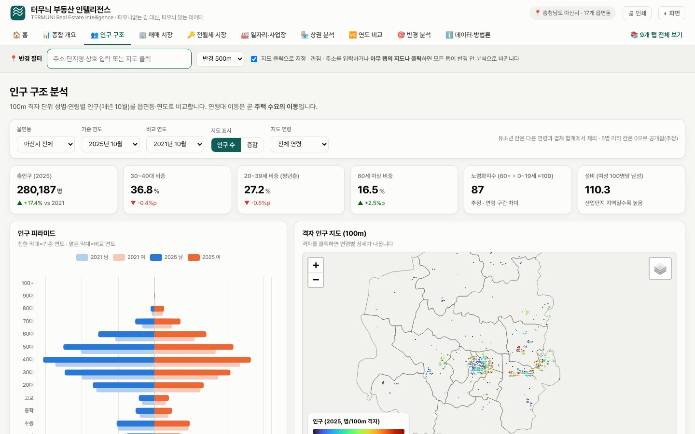
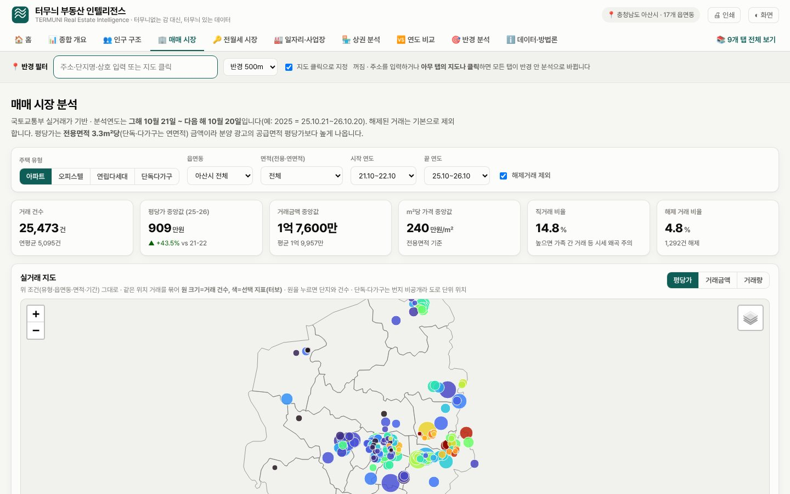
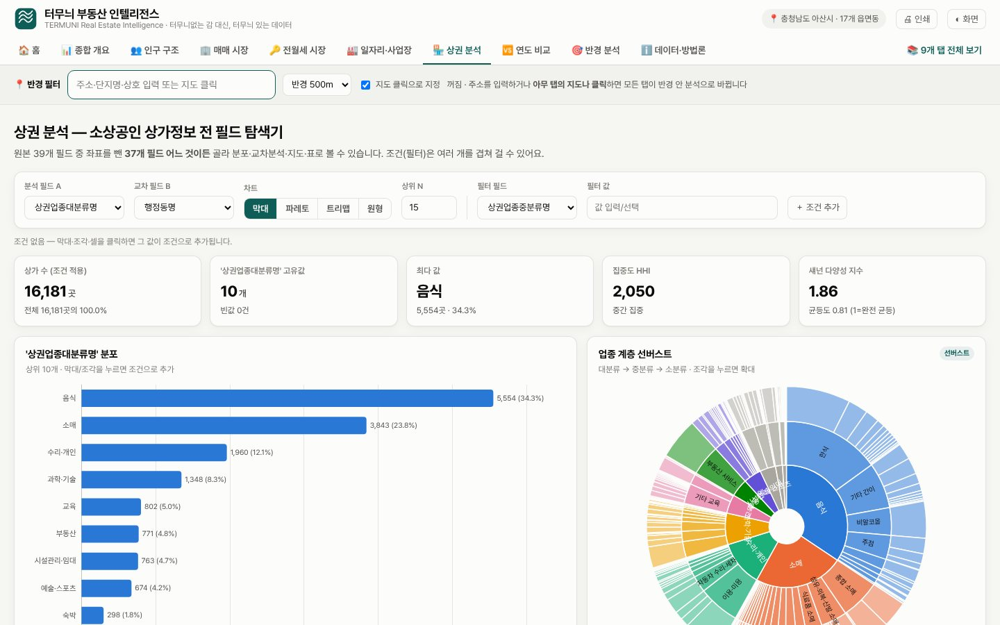

부동산 중개 · 상담
아산테크노밸리 일대 부동산 중개와 개발 · 관리 · 법령 상담
01
아산에서 15년째 부동산 중개 일을 하고 있습니다. 손님께 지역을 설명할 때 감보다는 근거를 함께 보여 드리고 싶어서, 공공데이터를 모으고 지도로 그려 보는 공부를 시작했습니다.
지금은 Python과 QGIS로 실거래가 · 인구 · 상권 데이터를 정리하고, 서울사이버대학교에서 Git과 GitHub를 배우며 그동안 만든 작업을 이곳에 하나씩 모으고 있습니다.
02
아산테크노밸리 일대 부동산 중개와 개발 · 관리 · 법령 상담
QGIS로 실거래가 · 인구 데이터를 지도에 올려 히트맵 · 등고선 · 격자로 분석
Python · Google Apps Script로 주소 변환, 토지 검토처럼 반복되는 일을 프로그램으로
03
직접 만든 것들입니다. 최근에 만든 것부터 정리했습니다.

대표 프로젝트 · 2026.10 공개
아산시 부동산 빅데이터 대시보드




코드 한 장면
격자(사각형)마다 중심점을 구한 뒤, 그 점이 어느 읍면동 경계 안에 있는지 공간 조인(sjoin)으로 찾아 격자 인구에 읍면동 이름을 붙입니다. 이렇게 해야 100m 격자 인구를 읍면동별로 더해서 비교할 수 있습니다.
pipeline/build_master.py 중 일부 (설명 주석 추가 · 줄바꿈 정리)
# 격자마다 한 줄만 남기고, WKT 글자를 지도 도형으로cells = pop.drop_duplicates('gid')[['gid', 'geometry']].copy()cg = gpd.GeoDataFrame(cells, geometry=cells.geometry.apply(wkt.loads), crs=5179) # 격자(사각형) → 중심점cg['geometry'] = cg.centroid # 중심점이 들어 있는 읍면동 찾기 (공간 조인)cg = gpd.sjoin(cg, BND[['읍면동', 'geometry']], how='left', predicate='within') # 격자 인구 표에 읍면동 이름 붙이기pop = pop.merge(cg[['gid', '읍면동']], on='gid', how='left')QGIS 분석
업무용 프로그램
04
다른 분이 만든 것 중 제 일에 쓰고 있는 것들입니다.
법령 · AI
법제처 Open API로 법령 · 판례 · 행정규칙 · 자치법규를 AI에서 바로 찾아볼 수 있게 해 주는 MCP 서버입니다. 계약서를 검토하고 내용증명을 쓸 때 법령 근거를 확인하는 데 써 보고 있습니다.
공간 데이터
1975년부터 지금까지 시점별 행정동(읍면동) 경계를 모아 둔 공개 데이터입니다. 터무늬 대시보드의 읍면동 경계로 사용했습니다.
05
현재 · 15년차
아산테크노밸리
2026 ~
대표 컨설턴트
재학 중
GitHub포트폴리오 · AI부동산금융모델링 · 고객경험디자인과콘텐츠전략 수강
06
부동산 상담이나 데이터 작업에 관한 이야기는 아래로 연락 주세요.